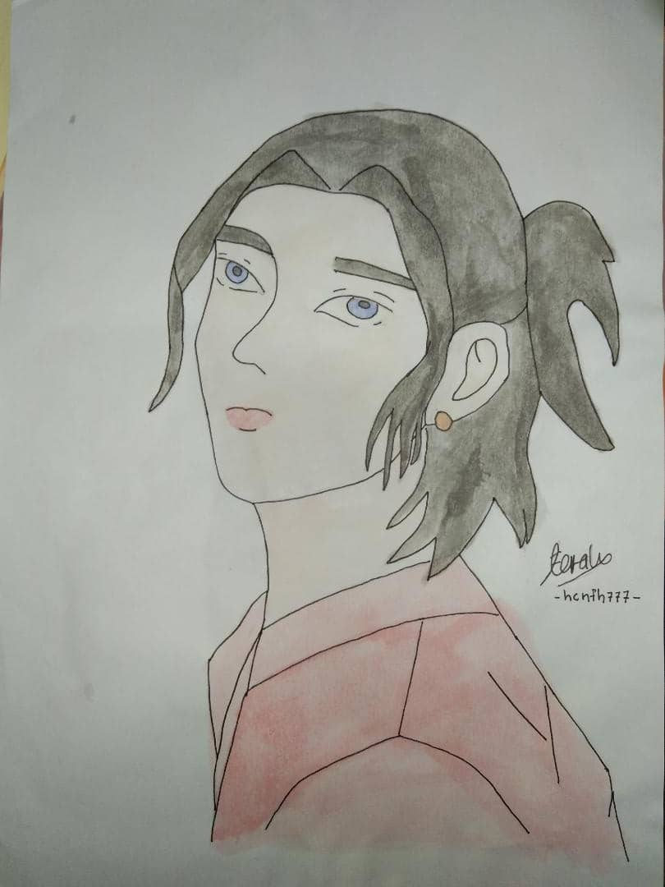
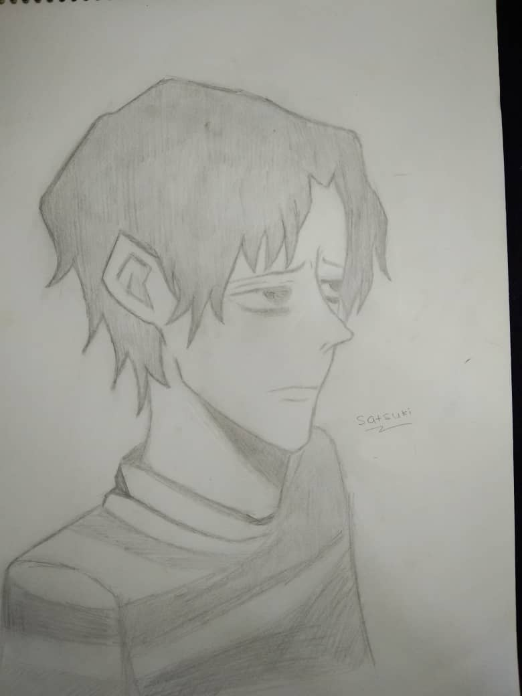
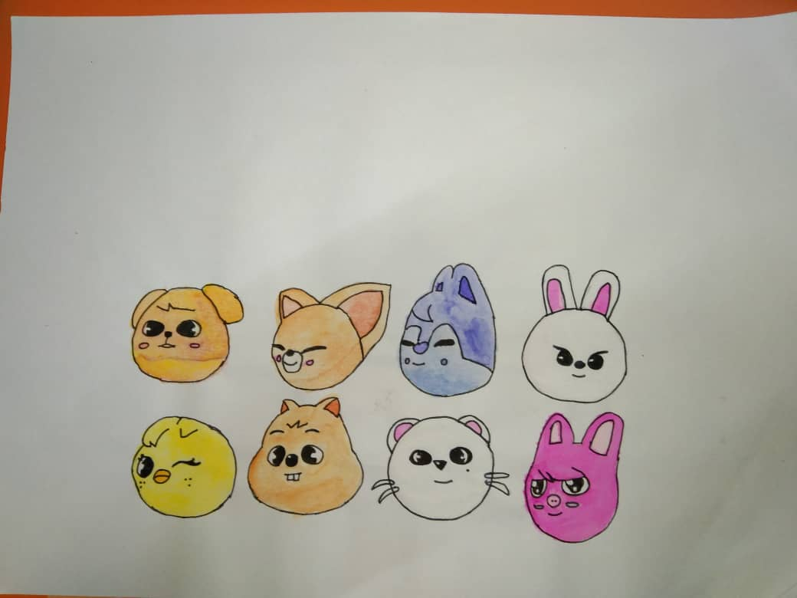
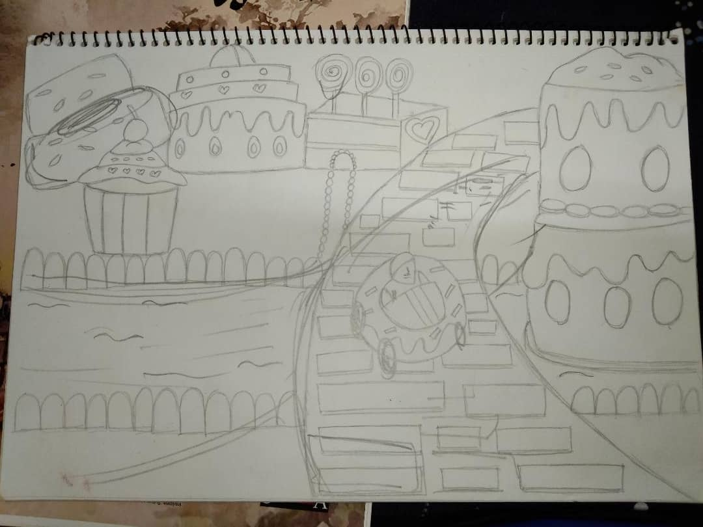
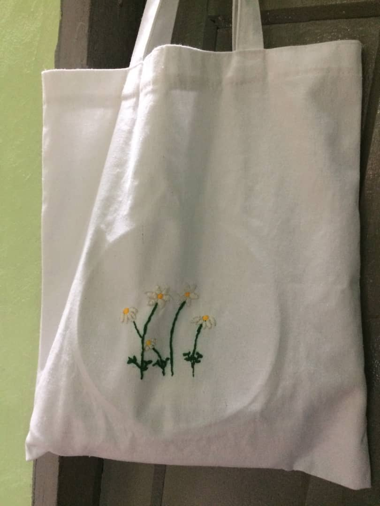

MY HOBBY
During free time, I like to drawing and skecthing.
I like drawing since I'm taking arts class when I was
in high school. Even though my drawing skill are not good as
other people,but I still like drawing since it help me to release
stress. Here are few of my drawing
  
My drawing during arts class in 2017

Embroidery is my current obsession and I just
tried to embroider on my tote bag
and here is the result


I just learn it on youtube and you can click it
here if you want to watch it